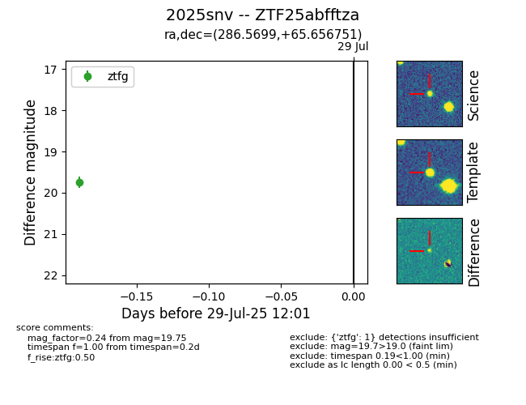

Target 2025snv at 2025-07-29 12:01, see:
FINK: fink-portal.org/2025snv
Lasair: lasair-ztf.lsst.ac.uk/objects/2025snv
ALeRCE: alerce.online/object/2025snv
TNS: wis-tns.org/object/2025snv
YSE: ziggy.ucolick.org/yse/transient_detail/2025snv
alt names
ZTF25abfftza (ztf,fink)
2025snv (tns,yse)
coordinates:
equatorial (ra, dec) = (286.5699,+65.65675)
galactic (l, b) = (96.3766,+23.06049)
photometry
last ztfg=19.75
1 ztfg detections
